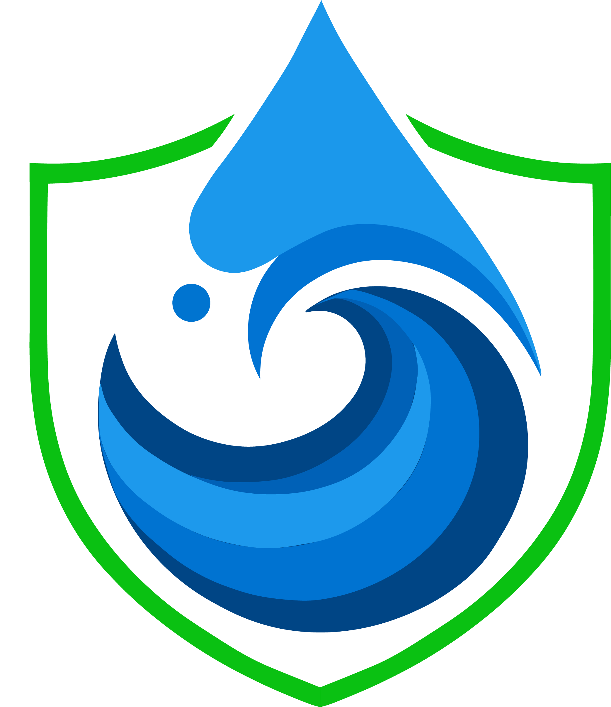
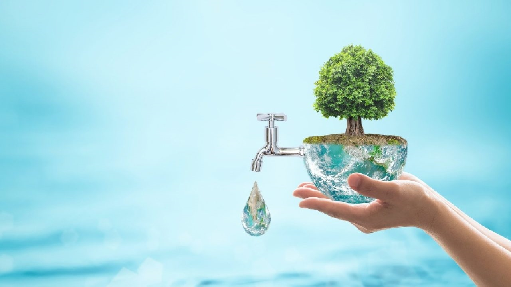
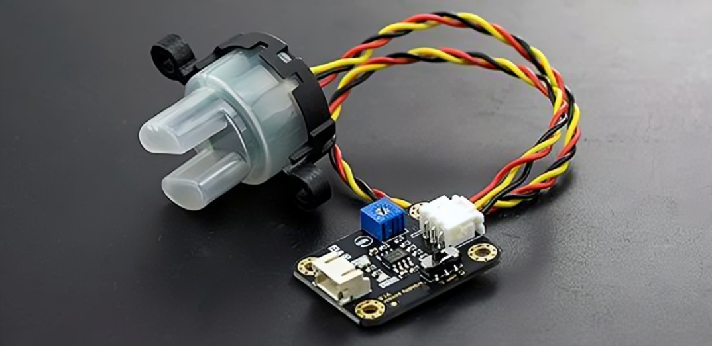
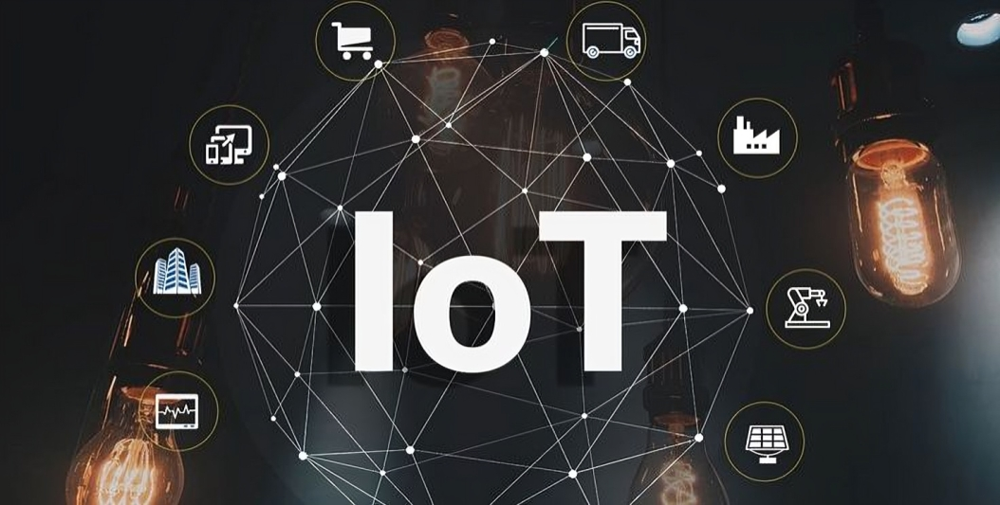
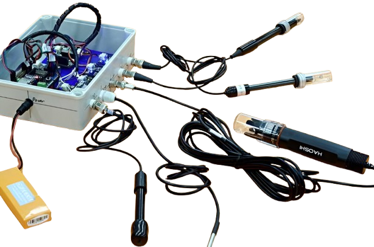

Smart IoT Sensors
Self-sustainable, edge-computing devices equipped with Wi-SUN Mesh Networking and Long-Range Communication. Continuously tracks critical parameters including Dissolved Oxygen, pH, BOD, COD, and Ammonia.

SK JalrakshakInnovating Real-Time Water Safety & Sustainability
We design, develop, and deploy advanced water quality monitoring solutions that integrate cutting-edge sensors, IoT connectivity, edge computing, and cloud-based analytics to safeguard public health.
(01) About Us
Jala Raksha was started to protect one of the most important things on Earth — clean water. Our team of engineers came together with one goal: to create smart, low-cost, and easy-to-use systems that check water quality using IoT technology.
Whether it’s a lake or a water tank, our sensors help people, communities, and governments make better decisions to keep water safe.
(02) Empowering Solutions
At Jal Rakshak, we empower Solutions by unlocking their potential through quality devices. We harness smart technology to protect water sources, support communities, and create a healthier environment.
Explore Solutions
We specialize in developing IoT-based systems that provide real-time, accurate, and actionable water quality data to help safeguard public health and promote sustainable water resource use.
To be a global leader in smart water quality monitoring by innovating sustainable, reliable, and scalable technologies that ensure safe and clean water for all, protecting ecosystems through data-driven environmental stewardship.

(04) The Critical Crisis
India is facing a severe and escalating water shortage, with precious resources becoming increasingly polluted. Traditional water quality monitoring methods are dangerously inadequate.

(05) The Deep-Tech Innovation
We completely engineer the gap with a revolutionary IoT-based 4G/5G intelligence grid. Our autonomous edge devices operate completely off-grid to safeguard public infrastructure instantly.
Smart sensor kit
Attach our smart sensor kit to any
water source in minutes.

Automatic Data Sync
Data is sent automatically to the
cloud for access anytime, anywhere.


Impactful Decisions
Get alerts when values exceed limits
and track trends over time.
Audit-ready reports
auto-generated for your board,
regulators, and compliance team.


Self-sustainable, edge-computing devices equipped with Wi-SUN Mesh Networking and Long-Range Communication. Continuously tracks critical parameters including Dissolved Oxygen, pH, BOD, COD, and Ammonia.
Our integrated 4G/5G gateways provide seamless cloud or on-premise connectivity, sending robust data from remote locations to intuitive dashboards with zero configuration required.
Actionable insights generated through remote monitoring. We deliver customizable visualizations, predictive analytics, and seamless API integration for smart city initiatives and municipal governance.
Target Markets
Our unique value proposition focuses on sustainability, health, and cutting-edge operational efficiency.
"By ensuring continuous water monitoring, we significantly reduce the risk of waterborne infections and safeguard public health."
"Our systems guarantee the continuous protection of lakes and other vital water bodies against immediate contamination."
"Leveraging AI and continuous parameter tracking, we deliver predictive analytics that empower smart decision-making."
"By ensuring continuous water monitoring, we significantly reduce the risk of waterborne infections and safeguard public health."
"Our systems guarantee the continuous protection of lakes and other vital water bodies against immediate contamination."
"Leveraging AI and continuous parameter tracking, we deliver predictive analytics that empower smart decision-making."
"Designed for long-term monitoring, our smart devices require minimal maintenance while delivering maximum operational uptime."
"We provide sustainable water resource management strategies that align with global environmental goals and SDG-6."
"Our primary focus is a safe water supply, preventing contamination through intelligent edge-telemetry and alerts."
"Designed for long-term monitoring, our smart devices require minimal maintenance while delivering maximum operational uptime."
"We provide sustainable water resource management strategies that align with global environmental goals and SDG-6."
"Our primary focus is a safe water supply, preventing contamination through intelligent edge-telemetry and alerts."
"A comprehensive IoT solution providing continuous remote monitoring for flow rates, pH, and crucial chemical levels."
"Highly scalable architecture ready for smart city integration and capable of supporting multiple parameters efficiently."
"Our Wi-SUN and 4G gateway deployment provides seamless data without the need for complex, over-engineered rural installations."
"A comprehensive IoT solution providing continuous remote monitoring for flow rates, pH, and crucial chemical levels."
"Highly scalable architecture ready for smart city integration and capable of supporting multiple parameters efficiently."
"Our Wi-SUN and 4G gateway deployment provides seamless data without the need for complex, over-engineered rural installations."
(06) Frequently Asked Questions
Find answers to common questions about our IoT sensors, telemetry, and data analytics solutions.
Expertise in IIoT engineering and embedded systems. Focused on real-time environmental monitoring.
IoT & GNSS Expert, Ph.D. with Gold Medal. Authored 100+ publications and holds 6 patents.
Have questions, need assistance, or want to provide feedback? We're here to help! Reach out to us, and our team will respond promptly to address your concerns.